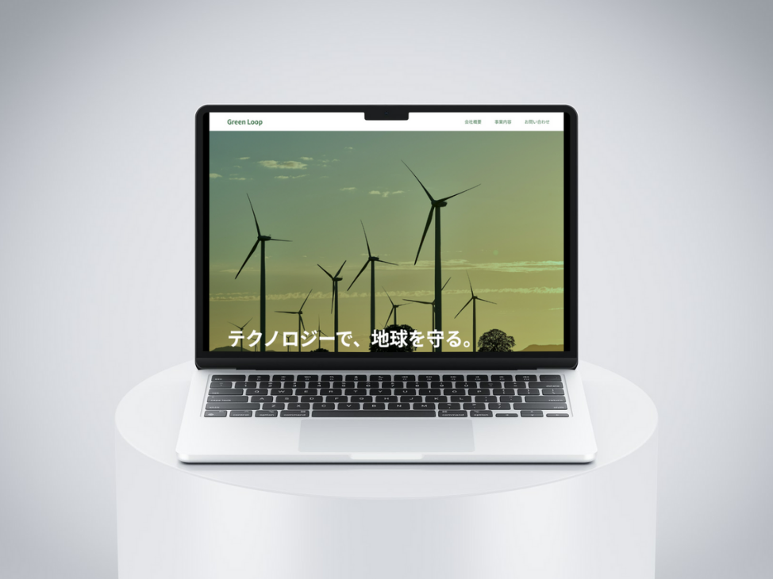
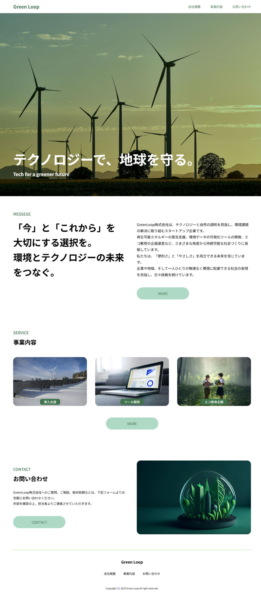

Green Loop

作品URL
【 https://kazu451.github.io/greenloop/ 】※現在細かいデザインを修正中
概要
環境×テクノロジーをテーマにした架空企業「GreenLoop株式会社」のコーポレートサイトを制作しました。サステナブルな社会を目指す企業の理念や事業内容をわかりやすく伝えるための構成・デザインを意識しています。
ペルソナ設計
- 年齢：30代〜40代の企業担当者
- 職業：自治体職員、中小企業の環境担当、教育機関の先生など
- 目的：環境対策やエコ教育のパートナー企業を探している
- デバイス：PCメイン（一部スマホ対応も想定）
サイトの目的
企業のビジョンや事業内容をわかりやすく伝え、問い合わせや連携につなげること。再生可能エネルギー導入や教育プログラムなど、具体的なサービス内容を明示し、信頼感のある印象を与えることを重視しました。
デザインのこだわり
- グリーンやホワイトを基調とした、清潔感と自然を意識した配色
- 見出しと文章の余白を広めに取り、視認性を高めるレイアウト
- アイコンやイラストを活用し、事業内容を視覚的にわかりやすく表現
- ヒーローエリアでは印象的なキャッチコピーと自然の画像で世界観を訴求
使用ツール
- 作成期間：１週間（制作・修正中）
- 使用ツール：HTML / CSS
※デザインツール未使用（コーディングベースで制作）
全体デザイン
